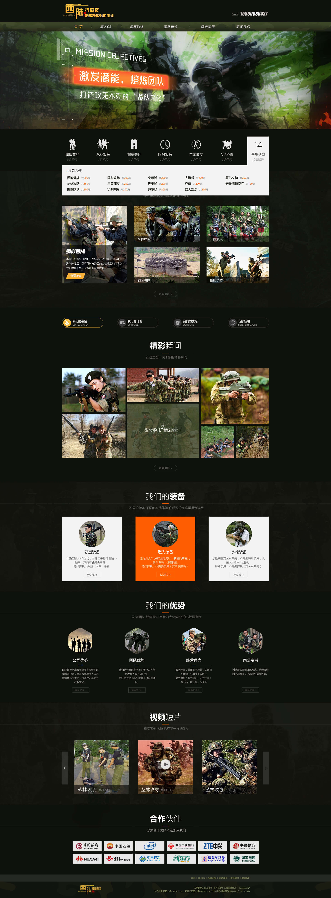
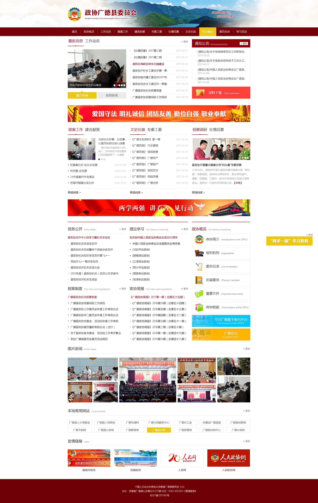
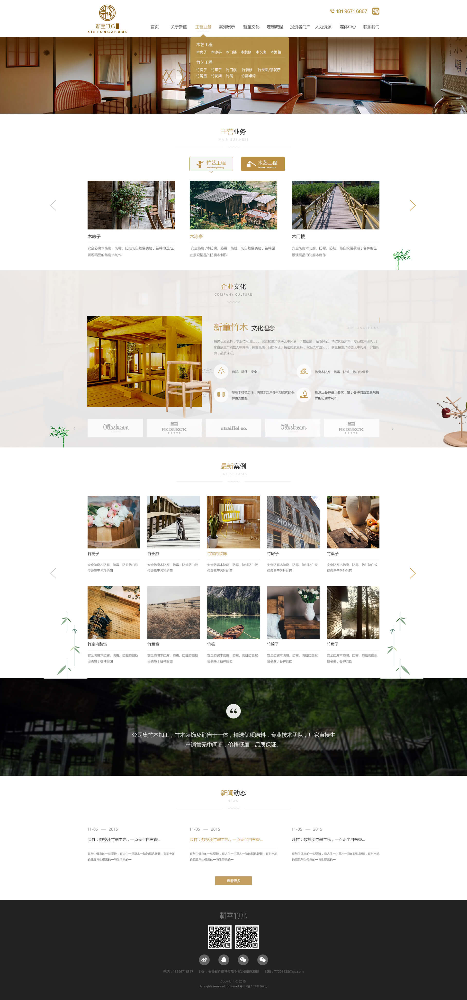
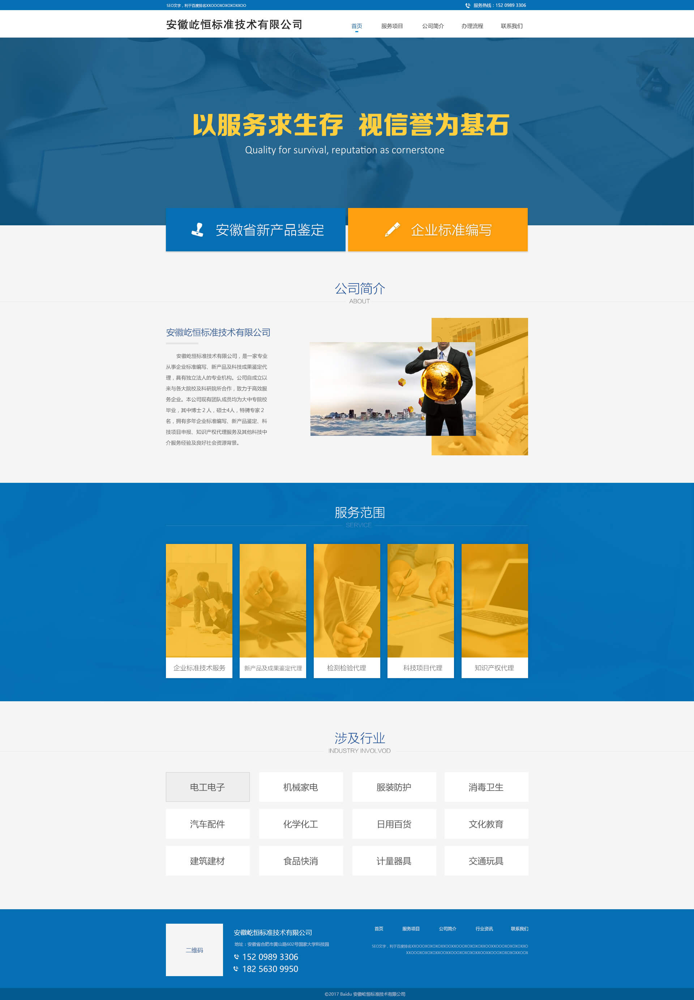

前端的道路是曲折的，有许多难点,前端技术虽然迭代更新很快，但我相信只要把css，js，html的基础打好，对于新技术的认识和学习一定是有帮助的.目前对于PC端，移动端的布局，还原设计图，还是能很好的完成的，js，jquery在写简单的交互也用过些，了解过前端的常用性能，学习过node.js多于web一个网页的访问流程相对的了解一下，框架方面学习过vue,从思想上，过去专注于dom结构的数据操作，到现在数据驱动视图mvvm思想的转变.未来会研究下vue的原理，源码的实现.
我是一个遇事就想把它办好的人,遇到bug会在网上找资料,尽自己最大努力把它解决 对新技术有着好奇心和学习兴趣.
- 

- 
- 
- 
可点击查看具体页面效果